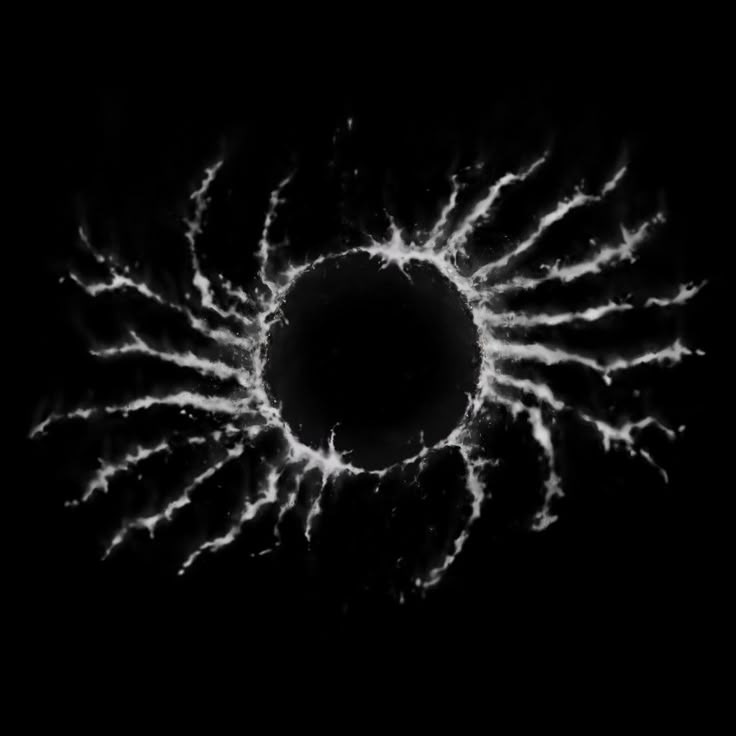
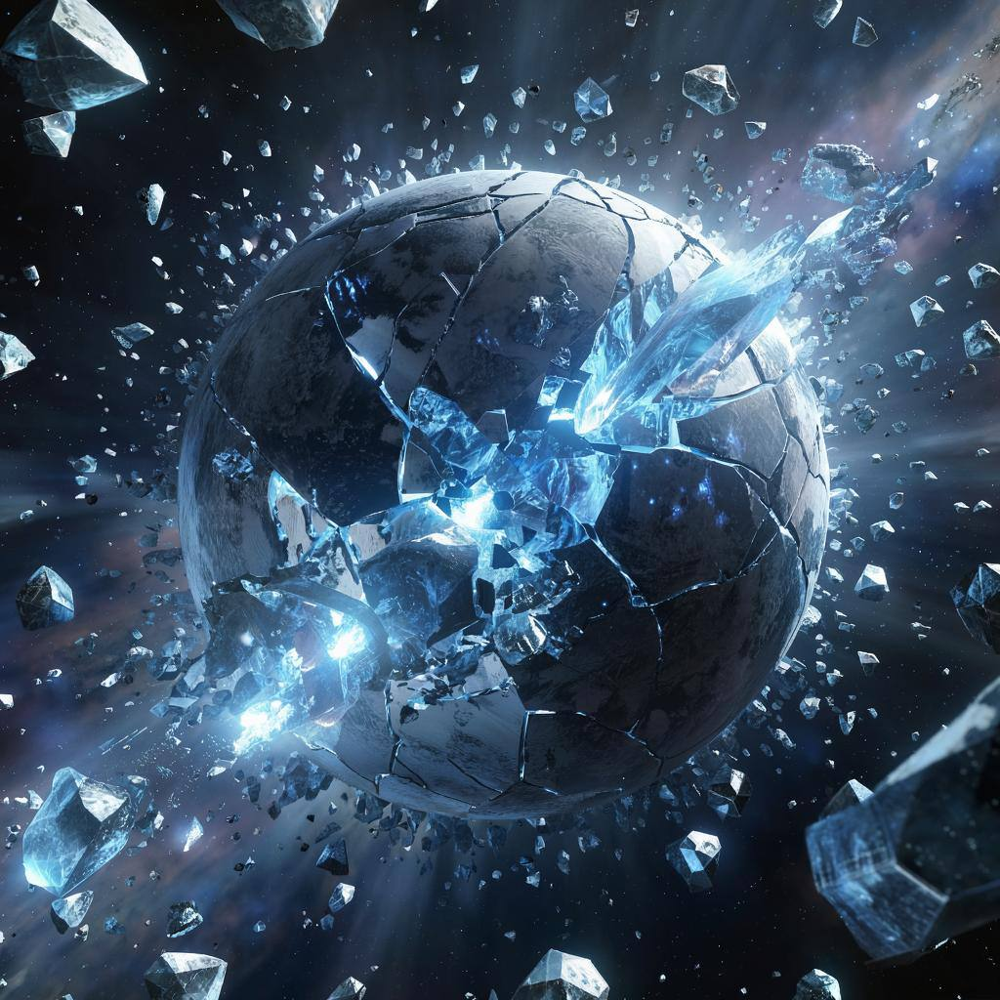
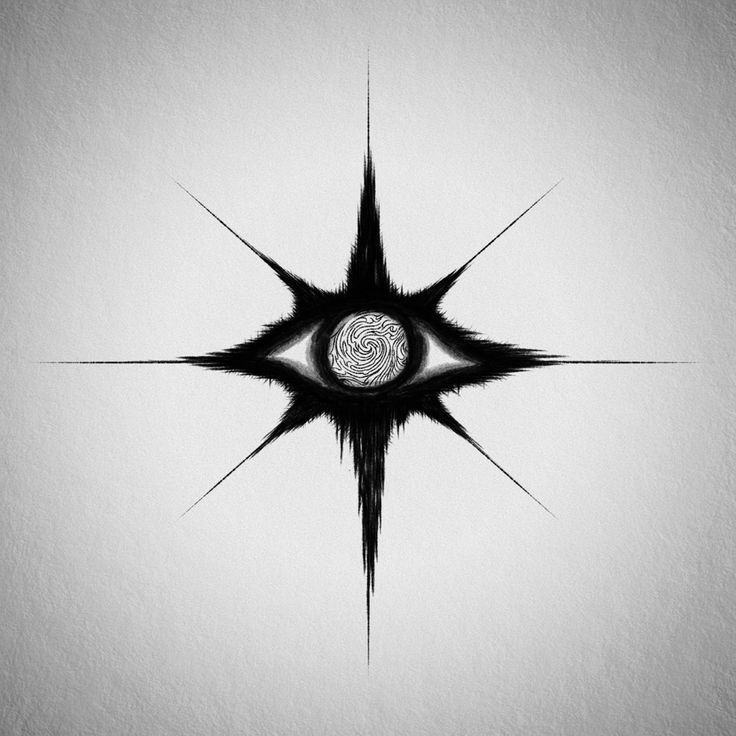
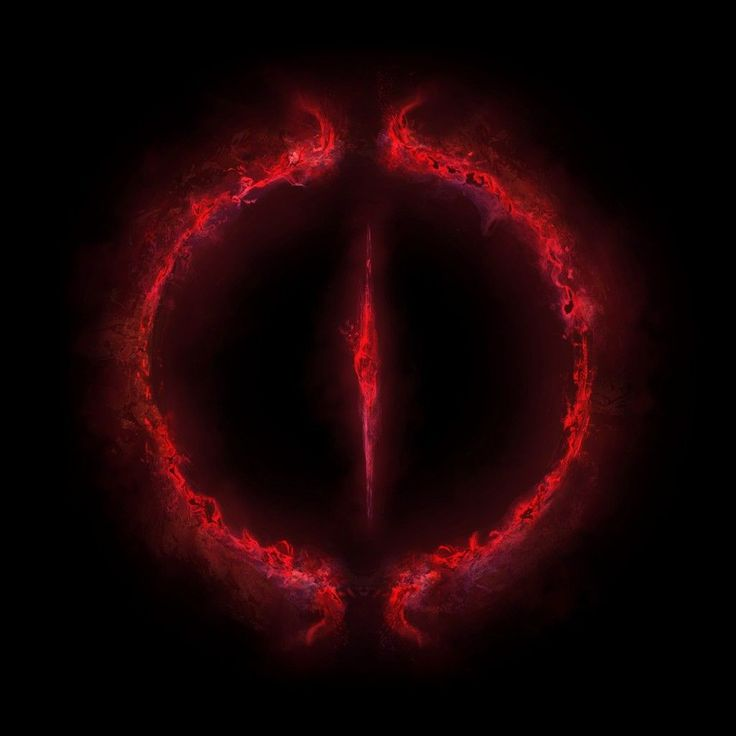

История
Происхождение (более 15 000 лет назад)
Астраниты возникли на планете "Никсар", уникальном мире, насыщенном квантовыми
кристаллами. Эти кристаллы служили проводниками "Субстрата" — энергии высшего
измерения, которая постепенно мутировала их ДНК, наделив их телекинезом, телепатией и
другими сверхспособностями.
Астраниты изначально были гуманоидной расой, крайне близкой к людям, но эволюционировавшей на планете Никсар — мире с аномально стабильным климатом и высоким содержанием кремния в почвах.
Физиология:
Практически идентичны людям, но с более гибкой ДНК (возможность быстрой адаптации).
Их клетки содержали микроскопические кристаллы, способные резонировать с внешней энергией (позже это станет основой для связи с Субстратом).
Общество:
Технологический уровень: XXI век (как человечество в 2500 году), но без войн — их цивилизация развивалась через кооперацию и науку.
Культ знания: Они верили, что вселенная — это код, который можно расшифровать.
Катализатор трансформации: "Разлом Никсара"
Событие:
15 000 лет назад вблизи Никсара произошёл каскадный коллапс пространства.
Открылся портал в Субстрат — измерение, где сознание формирует материю.
Последствия:
Учёные, изучавшие портал, начали меняться — их клетки впитывали энергию Субстрата, а мозг получил доступ к телекинезу.
Их глаза стали светиться, а кожа покрылась руническими узорами.
Эволюционный скачок:
Через 200 лет все астраниты обрели связь с Субстратом.
Они отказались от технологий, так как телекинез заменил машины.
Ранняя культура:
- Философская пацифистская.
- Конфликты решались через "телепатические дебаты", а не войны.
- Развивали науку, основанную на "квантовых принципах" и манипуляциях Субстратом.

Золотой Век (12 000 – 6 000 лет назад)
Период величайшего расцвета цивилизации астранитов.
Технологии:
- Создали квантовые компьютеры, работающие на Субстрате.
- Разработали арк-корабли, способные путешествовать через Субстрат со скоростью в 1000 раз выше световой.
- Медицина: регенерационные капсулы, лечащие любые раны.
Искусство:
Живопись пси-волнами — картины, меняющиеся в зависимости от мыслей зрителя.
Музыка временных парадоксов — мелодии, которые можно услышать до их создания.
Катастрофа Никсара:
- Один из "Творцов" (высшая каста астранитов) в ходе эксперимента случайно разорвал реальность.
- Планета Никсар исчезла в Субстрате, превратившись в блуждающий кристаллический сгусток.
- Выжившие астраниты были вынуждены покинуть родной мир.

Эра Отшельничества (6 000 лет назад – настоящее время)
После катастрофы астраниты разделились на две группы:
70% – Отшельники
- Удалились в изолированные убежища по всей галактике.
- Живут в медитативном состоянии, изучая Субстрат и избегая контактов.
- 15% – Наблюдатели
- Путешествуют по вселенной, изучают другие расы, но не вмешиваются в их дела.
- Собирают знания, чтобы предотвратить повторение катастрофы.
Оставшийся процент пошел дорогой воин.
Война с Кел'тари (800–780 лет назад)
Единственный крупный конфликт, в котором астраниты проявили военную мощь.
- Причина войны:
- "Империя Кел'тари", опасаясь силы астранитов, начала их систематическое истребление.
- Уничтожали целые поселения, пытаясь захватить их технологии.
- Ход войны:
- Астраниты, обычно избегающие конфликтов, впервые объединились через телепатическую сеть.
- Использовали абсолютное превосходство в телекинезе и манипуляциях реальностью.
- За почти 20 лет полностью уничтожили империю Кел'тари, стерев даже память о ней из Субстрата.
- Последствия:
- После победы астраниты снова разошлись, вернувшись к изоляции.
- Другие расы, узнав об исходе войны, перестали провоцировать астранитов.
Современное состояние:
- Философия:
- Астраниты способны уничтожить галактику, но не делают этого из-за страха повторения катастрофы.
- Их сила ограничена этическими принципами и осознанием ответственности.
- Угрозы:
- Кел'тарийские "Пожиратели Эха" — остатки империи, похитившие астранитского ребенка и создавшие армию гибридов.
- Реакция астранитов разделилась:
- Нейтралы игнорируют угрозу.
- "Хранители Безмолвия" хотят уничтожить гибридов.
- Творцы разрабатывают способы спасти или нейтрализовать угрозу.
- "Рука Никсара" — радикалы, желающие использовать гибридов в своих целях.
После катастрофы Никсара и войны с Кел'тари астраниты разделились на несколько течений.
Среди них наиболее радикальными являются Хранители Безмолвия и Рука Никсара – две
фракции, по-разному воспринимающие угрозы и будущее своей расы.
Хранители Безмолвия
(Изоляционисты, уничтожающие любые угрозы Субстрату)

Идеология - "Чистота Субстрата превыше всего"
Считают, что любое вмешательство в Субстрат (особенно со стороны гибридов или воров
технологий) должно караться полным уничтожением.
Верят, что астраниты должны оставаться в тени, не оставляя следов.
Тактика и методы
Тайные убийства и саботаж. Не вступают в открытые войны, предпочитая точечные удары.
Используют пси-вирусы, которые стирают память о себе у жертв. Уничтожают все следы
астранитских артефактов, попавших к другим расам.
Охота на гибридов
Особенно ненавидят полукровок (как кел'тарийских, так и случайных мутантов). Разработали
генетические токсины, вызывающие мгновенную кристаллизацию у носителей астранитской ДНК.
Организация
Скрытые монастыри в Субстрате. Их базы находятся вне материальной реальности, что делает
их неуязвимыми для обычных атак. Новых членов испытывают десятилетиями, прежде чем
допустить к знаниям.
Отношение к другим фракциям
Ненавидят "Руку Никсара" за попытки использовать силу астранитов в войнах. Презирают
Творцов за излишнюю терпимость к угрозам. Единственные, кто до конца верен изначальным
принципам Никсара.
Рука Никсара
(Астраниты-милитаристы, стремящиеся к контролю над галактикой)

Идеология - "Сила должна быть использована"
Считают, что астраниты слишком пассивны, и это приведёт к новым катастрофам. Хотят
создать новый порядок, где астраниты будут скрытыми правителями галактики.
Тактика и методы
Создание прокси-армий. Вместо прямых атак используют подконтрольные расы, внушая им свою
волю через Субстрат. Экспериментируют с гибридами, пытаясь создать послушных солдат.
Технологический террор
Воруют и модифицируют арк-корабли, превращая их в оружие. Разрабатывают субстратные
бомбы, способные стирать планеты из реальности.
Базы
Скрытые на астероидах-невидимках, замаскированных под обломки Никсара. Используют
иллюзии, чтобы оставаться незамеченными.
Отношение к другим фракциям
Ненавидят Хранителей Безмолвия за их догматизм.
Пытаются переманить Творцов, предлагая власть.
В открытую не всегда воюют, но готовят масштабный переворот.
На сегодняшний момент численность чистокровных астранитов достигает порядка чуть более
100 000. И с учетом их нейтральной политики это число будет расти медленно.
История астранитов — это путь от величайшего расцвета до трагедии, заставившей их
отказаться от активного вмешательства в галактику. Их сила колоссальна, но страх перед
собственными ошибками удерживает их от завоеваний. Они предпочитают наблюдать, изучать
и защищаться, но если их спровоцировать — ответ будет абсолютным и беспощадным.